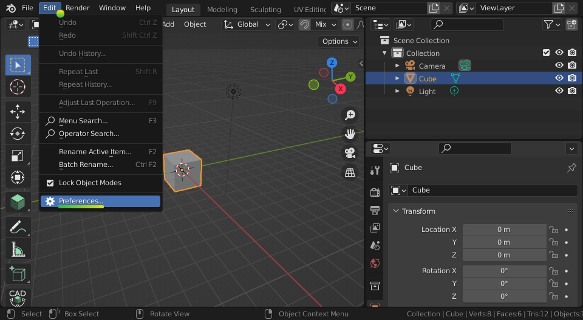
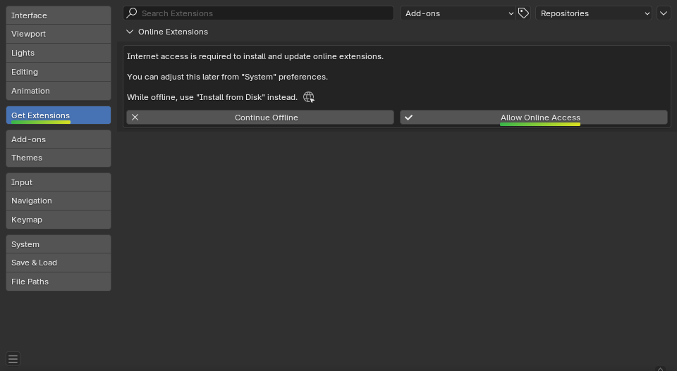
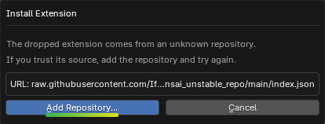
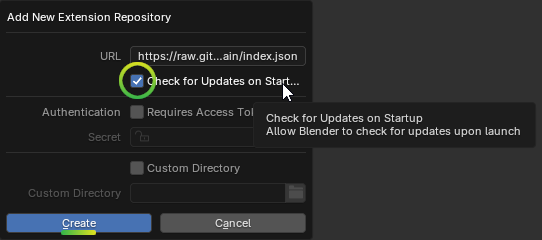
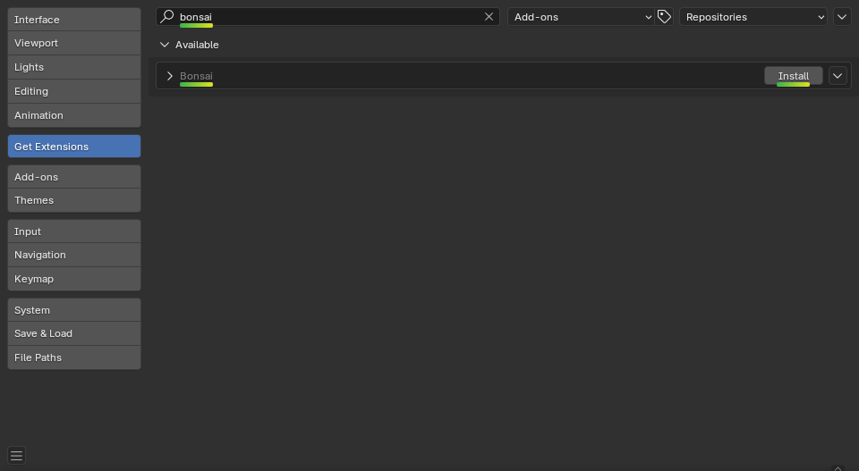
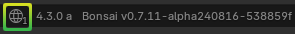
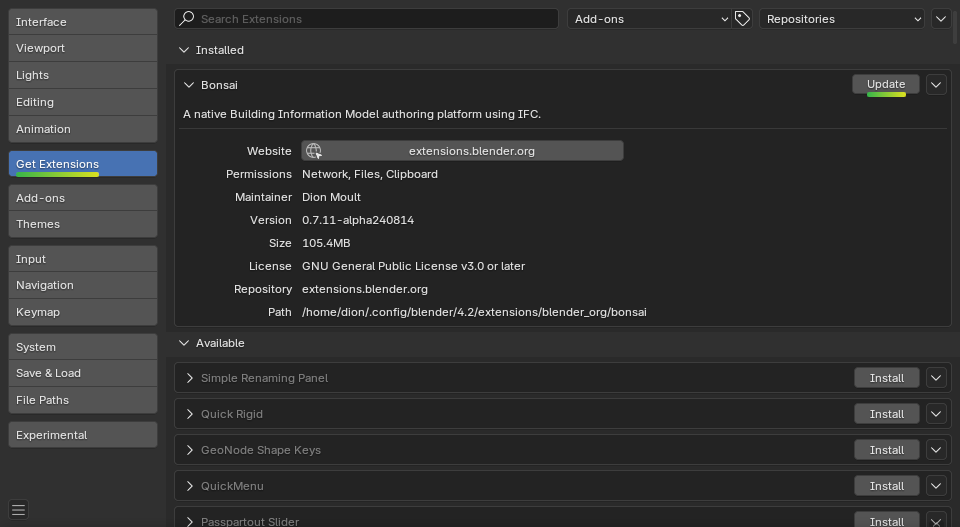
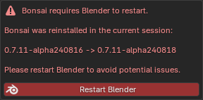

Installation¶
There are different methods of installation, depending on your situation.
Unstable installation is recommended for power users helping with testing.
Bundling for Blender is recommended for distributing the add-on.
Live development environment is recommended for developers who are actively coding.
Packaged installation is recommended for those who use a package manager.
System requirements¶
Bonsai officially supports all major 64-bit platforms, as well as the Python version shipped by the Blender Foundation for the most recent three major Blender versions:
64-bit Linux (
linux-x64)64-bit MacOS Intel (
macos-x64)64-bit MacOS Silicon (
macos-arm64)64-bit Windows (
windows-x64)Blender 4.2 with Python 3.11
Due to significant changes in the Blender extensions system, Blender versions <4.2 are not supported.
Developer builds may exist for different versions of Python but there will be no guarantee of the uptime or stability of these builds.
Other system specifications match the Blender Requirements and the VFX Platform standard.
Sometimes, a build may be delayed, or contain broken code. We try to avoid this, but it happens.
Unstable installation¶
Unstable installation is almost the same as Stable installation, except that they are typically updated every day. To install the Unstable version:
Open up Blender, and click on
Edit > Preferences.Select the Get Extensions tab, and press Allow Online Access.
Go to the Bonsai Unstable Repository, and drag and drop from the appropriate link in the
IDcolumn of the table into Blender depending on your operating system.Enable Check for Updates on Startup to get updates for daily Bonsai builds automatically.

Tip
Instead of drag and drop, you can manually create the repository:
Open . You’ll see a window similar to the one above.
Use as URL:
https://raw.githubusercontent.com/IfcOpenShell/bonsai_unstable_repo/main/index.json
and enable Check for Updates on Startup if you want them.
Search for Bonsai in the top left search bar, then press the Install button.

Warning
Make sure the extension you install has raw.githubusercontent.com as
the “Repository” (not extensions.blender.org).
Whenever a new update is available, you’ll see it in the bottom right
To update, click on the update button in .
After an update, be sure to restart.

If you wish to install an Unstable version offline, you can download a daily or previous build from the GitHub releases page, then go to .
Tip
Installing a previous build is a great way to roll back to previous versions. Uninstall the current version, then install the previous version from your disk. Make the install directory into the repo folder, and you can still update by the click of a button, when you are ready for the latest build.
Bundling for Blender¶
Instead of waiting for an official release on the Bonsai website, it is possible to make your own Blender add-on from the bleeding edge source code of Bonsai. Bonsai is coded in Python and doesn’t require any compilation, so this is a relatively easy process.
Note that Bonsai depends on IfcOpenShell, and IfcOpenShell does require compilation. The following instructions will use a pre-built IfcOpenShell (using an IfcOpenBot build) for convenience. Instructions on how to compile IfcOpenShell is out of scope of this document.
You can create your own package by using the Makefile as shown below. You can
choose between a PLATFORM of linux, macos, macosm1, and win.
You can choose between a PYVERSION of py312, py311, py310, or
py39.
cd src/bonsai
make dist PLATFORM=linux PYVERSION=py311
ls dist/
This will give you a fully packaged Blender add-on zip that you can distribute and install.
Live development environment¶
First, install using the Unstable installation method. This will provide all compiled dependencies for you out of the box.
Once you’ve done this, we’ll replace the installed Python files with those from our Git repository. We’re going to use symbolic links, so we can code in our Git repository, and see the changes in our Blender installation (you will need to restart Blender to see changes).
For Linux or Mac:
# Please update REPO_PATH and BLENDER_PATH in the script below.
# Default BLENDER_PATH on Mac: "/Users/$USER/Library/Application Support/Blender/4.3"
# Default BLENDER_PATH on Linux: "$HOME/.config/blender/4.3"
# REPO_PATH="/path/to/where/your/git/repository/is/cloned/IfcOpenShell"
set -e
REPO_PATH=""
BLENDER_PATH=""
PACKAGE_PATH="${BLENDER_PATH}/extensions/.local/lib/python3.11/site-packages"
# If you are installing offline, use this instead:
# BONSAI_PATH="${BLENDER_PATH}/extensions/user_default/bonsai"
BONSAI_PATH="${BLENDER_PATH}/extensions/raw_githubusercontent_com/bonsai"
# Changing to the Git repository directory
cd "${REPO_PATH}"
# Copy over compiled IfcOpenShell files
cp "${PACKAGE_PATH}/ifcopenshell/"*_wrapper* "${PWD}/src/ifcopenshell-python/ifcopenshell/"
# Remove extension and link to Git
rm "${BONSAI_PATH}/__init__.py"
rm -r "${PACKAGE_PATH}/bonsai"
rm -r "${PACKAGE_PATH}/ifcopenshell"
rm -r "${PACKAGE_PATH}/ifccsv.py"
rm -r "${PACKAGE_PATH}/ifcdiff.py"
rm -r "${PACKAGE_PATH}/bsdd.py"
rm -r "${PACKAGE_PATH}/bcf"
rm -r "${PACKAGE_PATH}/ifc4d"
rm -r "${PACKAGE_PATH}/ifc5d"
rm -r "${PACKAGE_PATH}/ifccityjson"
rm -r "${PACKAGE_PATH}/ifcclash"
rm -r "${PACKAGE_PATH}/ifcpatch"
rm -r "${PACKAGE_PATH}/ifctester"
rm -r "${PACKAGE_PATH}/ifcfm"
ln -s "${PWD}/src/bonsai/bonsai/__init__.py" "${BONSAI_PATH}/__init__.py"
ln -s "${PWD}/src/bonsai/bonsai" "${PACKAGE_PATH}/bonsai"
ln -s "${PWD}/src/ifcopenshell-python/ifcopenshell" "${PACKAGE_PATH}/ifcopenshell"
ln -s "${PWD}/src/ifccsv/ifccsv.py" "${PACKAGE_PATH}/ifccsv.py"
ln -s "${PWD}/src/ifcdiff/ifcdiff.py" "${PACKAGE_PATH}/ifcdiff.py"
ln -s "${PWD}/src/bsdd/bsdd.py" "${PACKAGE_PATH}/bsdd.py"
ln -s "${PWD}/src/bcf/bcf" "${PACKAGE_PATH}/bcf"
ln -s "${PWD}/src/ifc4d/ifc4d" "${PACKAGE_PATH}/ifc4d"
ln -s "${PWD}/src/ifc5d/ifc5d" "${PACKAGE_PATH}/ifc5d"
ln -s "${PWD}/src/ifccityjson/ifccityjson" "${PACKAGE_PATH}/ifccityjson"
ln -s "${PWD}/src/ifcclash/ifcclash" "${PACKAGE_PATH}/ifcclash"
ln -s "${PWD}/src/ifcpatch/ifcpatch" "${PACKAGE_PATH}/ifcpatch"
ln -s "${PWD}/src/ifctester/ifctester" "${PACKAGE_PATH}/ifctester"
ln -s "${PWD}/src/ifcfm/ifcfm" "${PACKAGE_PATH}/ifcfm"
# Manually download some third party dependencies
cd "${PACKAGE_PATH}/bonsai/bim/data/gantt"
wget https://raw.githubusercontent.com/jsGanttImproved/jsgantt-improved/master/dist/jsgantt.js
wget https://raw.githubusercontent.com/jsGanttImproved/jsgantt-improved/master/dist/jsgantt.css
cd "${PACKAGE_PATH}/bonsai/bim/data/brick"
wget https://github.com/BrickSchema/Brick/releases/download/nightly/Brick.ttl
For Windows, run this batch script as an administrator. Before running it follow the instructions described in the rem tags.
@echo off
setlocal
rem Uncomment setting REPO_PATH to use custom path for IfcOpenShell repository.
rem Otherwise by default it is assumed script is executed from IfcOpenShell directory.
rem SET REPO_PATH=%HOMEDRIVE%\Users\%USERNAME%\Where\Your\Git\Repository\Is\Cloned\IfcOpenShell
SET BLENDER_PATH=%HOMEDRIVE%\Users\%USERNAME%\AppData\Roaming\Blender Foundation\Blender\4.3
SET PACKAGE_PATH=%BLENDER_PATH%\extensions\.local\lib\python3.11\site-packages
SET BONSAI_PATH=%BLENDER_PATH%\extensions\user_default\bonsai
echo SETUP BONSAI ADD-ON LIVE DEVELOPMENT ENVIRONMENT
echo Update REPO_PATH, BLENDER_PATH, PACKAGE_PATH, BONSAI_PATH in the script above.
echo This script needs to be run as administrator (to create symbolic links)
echo Make sure you have followed these steps before proceeding :)
echo.
echo Currently set paths:
if not defined REPO_PATH (
echo REPO_PATH is not set, assuming we're already in IfcOpenShell directory.
set REPO_PATH=%cd%
)
echo REPO_PATH=%REPO_PATH%
echo BLENDER_PATH=%BLENDER_PATH%
echo PACKAGE_PATH=%PACKAGE_PATH%
echo BONSAI_PATH=%BONSAI_PATH%
pause
echo Changing to the Git repository directory...
cd %REPO_PATH%
echo Copy over compiled IfcOpenShell files...
copy "%PACKAGE_PATH%\ifcopenshell\*_wrapper*" "%CD%\src\ifcopenshell-python\ifcopenshell\"
echo Remove extension and link to Git...
del "%BONSAI_PATH%\__init__.py"
rd /S /Q "%PACKAGE_PATH%\bonsai"
rd /S /Q "%PACKAGE_PATH%\ifcopenshell"
del "%PACKAGE_PATH%\ifccsv.py"
del "%PACKAGE_PATH%\ifcdiff.py"
del "%PACKAGE_PATH%\bsdd.py"
rd /S /Q "%PACKAGE_PATH%\bcf"
rd /S /Q "%PACKAGE_PATH%\ifc4d"
rd /S /Q "%PACKAGE_PATH%\ifc5d"
rd /S /Q "%PACKAGE_PATH%\ifccityjson"
rd /S /Q "%PACKAGE_PATH%\ifcclash"
rd /S /Q "%PACKAGE_PATH%\ifcpatch"
rd /S /Q "%PACKAGE_PATH%\ifctester"
rd /S /Q "%PACKAGE_PATH%\ifcfm"
mklink "%BONSAI_PATH%\__init__.py" "%CD%\src\bonsai\bonsai\__init__.py"
mklink /D "%PACKAGE_PATH%\bonsai" "%CD%\src\bonsai\bonsai"
mklink /D "%PACKAGE_PATH%\ifcopenshell" "%CD%\src\ifcopenshell-python\ifcopenshell"
mklink "%PACKAGE_PATH%\ifccsv.py" "%CD%\src\ifccsv\ifccsv.py"
mklink "%PACKAGE_PATH%\ifcdiff.py" "%CD%\src\ifcdiff\ifcdiff.py"
mklink "%PACKAGE_PATH%\bsdd.py" "%CD%\src\bsdd\bsdd.py"
mklink /D "%PACKAGE_PATH%\bcf" "%CD%\src\bcf\bcf"
mklink /D "%PACKAGE_PATH%\ifc4d" "%CD%\src\ifc4d\ifc4d"
mklink /D "%PACKAGE_PATH%\ifc5d" "%CD%\src\ifc5d\ifc5d"
mklink /D "%PACKAGE_PATH%\ifccityjson" "%CD%\src\ifccityjson\ifccityjson"
mklink /D "%PACKAGE_PATH%\ifcclash" "%CD%\src\ifcclash\ifcclash"
mklink /D "%PACKAGE_PATH%\ifcpatch" "%CD%\src\ifcpatch\ifcpatch"
mklink /D "%PACKAGE_PATH%\ifctester" "%CD%\src\ifctester\ifctester"
mklink /D "%PACKAGE_PATH%\ifcfm" "%CD%\src\ifcfm\ifcfm"
echo Manually downloading some third party dependencies...
curl https://raw.githubusercontent.com/jsGanttImproved/jsgantt-improved/master/dist/jsgantt.js -o "%PACKAGE_PATH%\bonsai\bim\data\gantt\jsgantt.js"
curl https://raw.githubusercontent.com/jsGanttImproved/jsgantt-improved/master/dist/jsgantt.css -o "%PACKAGE_PATH%\bonsai\bim\data\gantt\jsgantt.css"
curl -L https://github.com/BrickSchema/Brick/releases/download/nightly/Brick.ttl -o "%PACKAGE_PATH%\bonsai\bim\data\brick\Brick.ttl"
pause
After you modify your code in the Git repository, you will need to restart Blender for the changes to take effect.
Note that this only links Python code to the Git repository. If there are any major changes such as new dependencies or newly compiled C++ code, you will need to make the updates manually. This is relatively rare. Reviewing the Makefile history, is one quick way to see if a dependency has changed.
If there are changes to the IfcOpenShell binaries, you may replace the two
*ifcopenshell_wrapper* files with new ones downloaded from the automated
IfcOpenShell builds directory.
See also
There is a useful Blender Addon (see forum thread) that adds a Reboot button in File menu. In this way, it’s possible to directly restart Blender and test the modified source code. There is also a VS Code add-on called Blender Development that has a similar functionality.
Packaged installation¶
Arch Linux: Direct from Git.
Chocolatey on Windows: Unstable.
Tips for package managers¶
Bonsai is fully contained in the bonsai/ subfolder of the Blender add-ons
directory. This is typically distributed as a zipfile as per Blender add-on
conventions. Within this folder, you’ll find the following file structure:
core/ (Blender agnostic core logic)
tool/ (Blender specific shared functionality)
bim/ (Blender specific UI)
libs/ (other assets)
wheels/ (dependencies)
__init__.py
This corresponds to the structure found in the source code here.
Bonsai is complex, and requires many dependencies, including Python modules, binaries, and static assets. When packaged for users, these dependencies are bundled with the add-on for convenience.
If you choose to install Bonsai and use your own system dependencies, the
source of truth for how dependencies are bundled are found in
the Makefile
in the dist target.
Add-on compatibility¶
Bonsai is a non-trivial add-on. By turning Blender into a graphical front-end to a native IFC authoring platform, some fundamental Blender features (such as hotkeys for basic functionality like object deletion or duplication) have been patched and many dependencies have been introduced.
Other add-ons may no longer work as intended when Bonsai is enabled, or vice versa, Bonsai may no longer work as intended when other add-ons are enabled.
Known scenarios which will lead to add-on incompatibility include:
The add-on also overrides the same hotkeys. For example, if an add-on overrides the “X” key to delete an object, you will need to manually trigger (either via menu or custom hotkey) the Bonsai equivalent operator (e.g. IFC Delete).
The add-on uses object deletion or duplication macros with dictionary override. Note that this is also deprecated in Blender, so the other add-on should be updated to fix this.
The add-on requires a conflicting dependency, or a conflicting version of the same dependency. Neither add-on may work simultaneously.